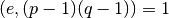
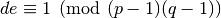
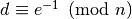
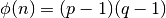

Introduzione¶
RSA è un crittosistema a chiave pubblica.
Alice vuole inviare un messaggio a Bob, ma i due non hanno mai comunicato prima d’ora. Ogni messaggio che Alice invia a Bob potrebbe essere intercettato e letto da Eva. Alice dovrebbe inviare una chiave a Bob, ma anche in questo caso Eva potrebbe intercettarla per leggere ogni altro messaggio.
L’idea dei crittosistemi a chiave pubblica è sfruttare funzioni unidirezionali per codificare i messaggi, il destinatario conosce una trap-door e sa come decifrare il messaggio. Poichè è l’unico a conoscere la scappatoia, nessun altro è in grado di leggerlo, poichè il problema dell’inversione di questa funzione unidirezionale è ritenuto difficile.
RSA fu proposto da Rivest, Shamir e Adleman nel 1977; è basato sulla difficoltà di fattorizzare un intero grande in primi. Poichè fattorizzare numeri è ritenuto un problema difficile, RSA è ritenuto sicuro.
Le basi di RSA¶
Si descrive brevemente l’algoritmo di codifica/decodifica. Inizialmente Bob:
- Sceglie due numeri primi p e q grandi e distinti, quindi li moltiplica, ottenendo

- Sceglie un esponente di cifratura e, tale che 
- Invia ad Alice la coppia (n,e) mantenendo segreti i valori di p e q.
Alice non ha bisogno di conoscere p e q per inviare un messaggio in modo sicuro a Bob, infatti:
- Scrive un messaggio come un numero m. Se m è maggiore di n allora viene spezzato in blocchi di dimensione inferiore, supponiamo quindi m < n
- Produce il messaggio da inviare

- Invia c a Bob
Bob che conosce p e q può calcolare l’esponente di decifrazione d, tale che  quindi può decifrare il messaggio, che in virtù del teorema di Eulero è:

Se Eva intercetta (n,e) e c non può leggere il messaggio; per farlo avrebbe bisogno di , ovvero di , che si dimostra un problema equivalente alla conoscenza di p e q, la fattorizzazione di n. Poichè è ritenuto un problema difficile, Alice e Bob sono al sicuro.
Note
In realtà un’implementazione errata di RSA può portare a non pochi problemi di sicurezza, se ne presenteranno alcuni, altri saranno accennati nel seguito.
Note
Osserviamo che Bob non fornisce direttamente la chiave ad Alice, ma si affida ad enti di certificazione e pubblicazione. Infatti Eva potrebbe fornire ad Alice la sua chiave pubblica e comportarsi come intermediaria tra lei e Bob, ritrasmettendo i messaggi, che nel frattempo ha letto. Una simile violazione è detta man in the middle. Nel resto della trattazione supporremo che non sia possibile.
Motivazioni di questa implementazione¶
Questa applicazione è stata realizzata per l’esame del corso di Crittografia del Prof. Norberto Gavioli, Università degli Studi dell’Aquila. Lo scopo è mostrare come sia possibile generare dei numeri primi, testando la primalità degli interi con differenti tecniche, e come, sotto opportune condizioni, sia possibile fattorizzare un numero in primi.
Nel seguito si descriverà l’applicazione in questione, offrendo in apertura di sezione nozioni teoriche che giustificano l’implementazione.
In particolare, in ordine si presenteranno: